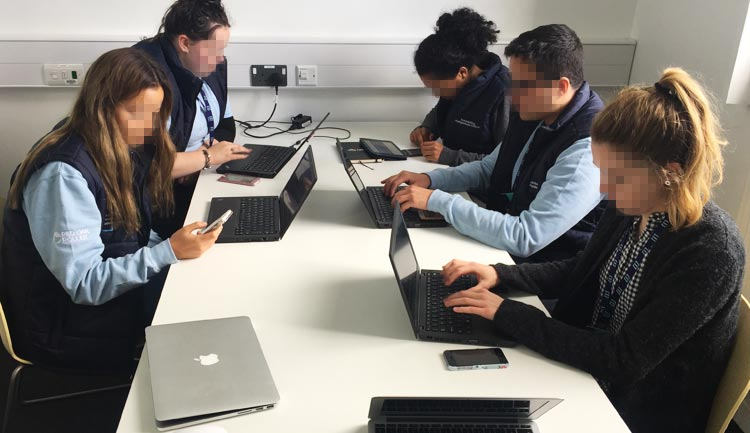
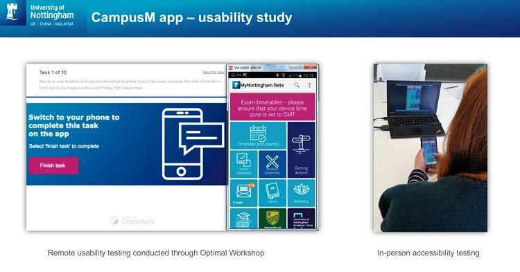

I was part of a university-wide team tasked with developing a mobile app for students to access timetables, maps, course materials, support and other essentials for new and current students. The app was based on a third party solution used more widely across the organisation.
My team conducted a series of iterative, 'guerilla' style usability studies with students across campus to test major new releases on the app, and encourage a culture of continuous feedback and development.

We wanted to test the usability if the design with students where they were in their natural environments. We agreed some high level goals for each session with the project team and developed tasks for students to complete, using dedicated mobile usability software and remote tools.
UX team members set up bases across various University campuses, and approached students ad hoc armed with freebies in return for their efforts. We reached students in their university accommodation through pre-planned remote sessions to widen our sample groups.

The sessions proved to be a success with students and the project teams alike. Time spent conducting more traditional lab-based usability studies was cut by over 50%, saving costs to the project and providing rapid feedback to the team to continuously improve the app.
Client: University of Nottingham
Date: June 2018
Tag: user research, mobile
"Thank you both for your time and effort on this, it is an excellent piece of work and raises some interesting and very useful points"
- Michael Fletcher, Project Manager